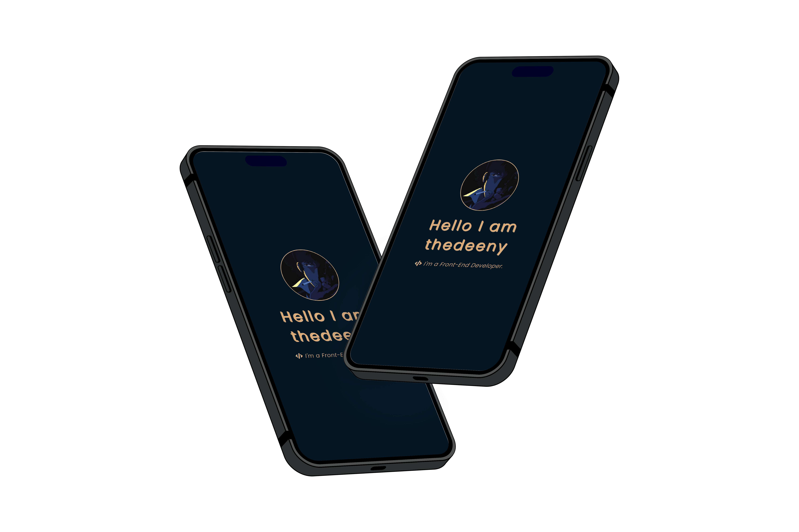

Hello, its me
Bryn.
Welcome to my portfolio, please take a look around. You can view my work to understand my skillset and ambitions.
Explore

Welcome to my portfolio, please take a look around. You can view my work to understand my skillset and ambitions.
ExploreHello, my name is Bryn, and I'm not just a developer; I'm a passionate and creative force in the world of web technology. With a background firmly rooted in web development, I've embarked on a journey filled with code and design, driven by an insatiable curiosity to push boundaries. My journey into the digital realm has seen me work on a diverse array of projects, both personal and professional. I find myself at home in the realm of front-end technologies, where HTML, CSS, and JavaScript become the paintbrushes on my canvas. But my love for this ever-evolving field doesn't stop there; I'm always eager to dive into the latest frameworks and libraries, seeking to broaden my skillset and deliver cutting-edge solutions. Beyond the lines of code, I possess a keen eye for design. Crafting aesthetically pleasing and intuitive user interfaces is not just a task; it's a passion. I believe that great design goes hand in hand with great functionality, and I've made it my mission to strike that perfect balance. Whether it's creating a captivating website layout or designing eye-catching graphics, I relish every opportunity to bring my ideas to life.
This year, I find myself embracing the role of a college student, passionately delving into the world of coding. While initially, coding and related subjects didn't captivate me, the more I learned about programming and its limitless possibilities, the more eager I became to expand my knowledge of programming languages. Fast forward to now, and I have accomplished a significant milestone - creating a website for a valued client. I'd be delighted if you could take a moment to check it out!
View Galactic InvestmentsRecently, I have collaborated with AJ & MJ Plant Sales to significantly enhance their digital presence. By leveraging advanced web development techniques, I have fully optimized their website for search engines, ensuring higher visibility and increased organic traffic. My efforts included a comprehensive overhaul of their sales page, integrating high-quality videos of their equipment into an interactive gallery to provide a more engaging user experience.
Additionally, I have implemented a robust social media strategy, integrating automated posting and analytics tools to maximize their reach and engagement. The new website, which will be launching soon, is built with the latest web technologies, including responsive design, improved load times, and enhanced security measures. This project highlights the use of modern frameworks and SEO best practices to drive customer acquisition and retention.
View AJ & MJ Plant Sales.Through my successful collaboration with AJ & MJ Plant Sales, I was introduced to Plant Pot Machinery. They were impressed with the work I did and enlisted my expertise to develop their entire website from the ground up.
For Plant Pot Machinery, I focused on creating a seamless and robust online platform. The project involved end-to-end development, including designing an intuitive user interface, implementing secure hosting solutions, and ensuring the website is fully responsive across all devices. I also optimized the site for search engines, enhancing their online visibility and driving more organic traffic.
This project allowed me to demonstrate my ability to deliver comprehensive web solutions, combining aesthetic appeal with functional excellence. I'm excited about the positive impact this new website will have on Plant Pot Machinery's business.
View Plant Pot MachineryYou can contact me through my social media, casual talk is also welcomed!